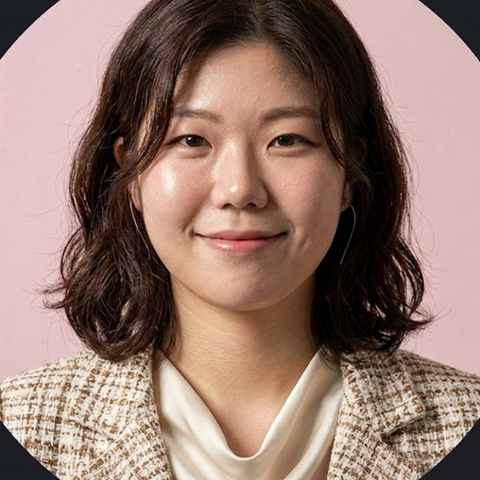
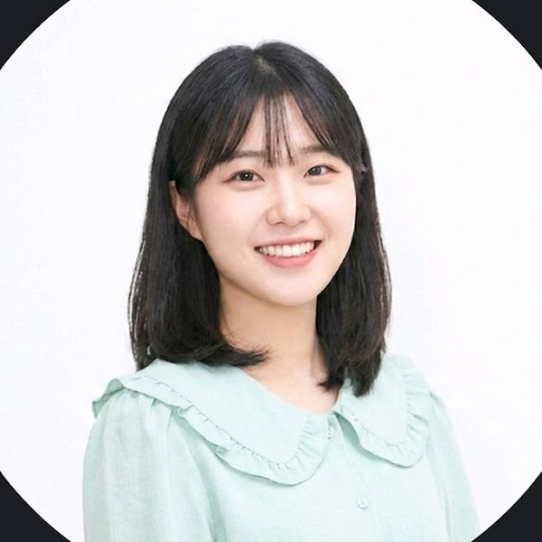
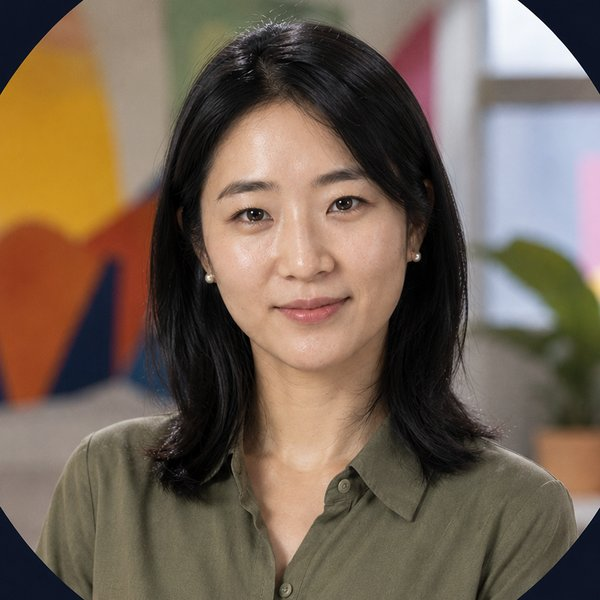

김서연 코치
연세대학교 심리학 석사
상담경력 9년
청소년·부모 상담
코치진
자격과 경력, 수퍼비전까지 3중 검증을 통과한 전문가만 함께합니다. 배정 이후에도 정기 사례 검토와 만족도 관리가 이어집니다.
3중 검증
상담(임상·상담심리) 또는 코칭(KAC·KPC·KSC, ICF) 공인 자격 보유를 서류와 원본 대조로 확인합니다.
실제 상담·코칭 실적과 전문 분야를 검증하고, 모의 세션 심사를 통과해야 합니다.
합류 후에도 정기 사례 검토(수퍼비전)와 세션 만족도 관리를 받습니다. 기준 미달 시 배정이 중단됩니다.
코치진
진단 결과에 따라 아래 코치진 중 가장 적합한 전문가가 근거와 함께 추천됩니다.
연세대학교 심리학 석사
상담경력 9년
청소년·부모 상담
이화여자대학교 사회복지학과
사회복지사 1급
가족상담 8년
고려대학교 심리학과
상담심리사 2급
진로코칭 6년
서울대학교 임상심리 석사
정서회복 프로그램 운영 10년
임상심리 전문
성균관대학교
라이프코치
자기이해·습관코칭 7년
중앙대학교
청소년지도사
학습·진로코칭 5년
서강대학교 심리학과
심리상담사
관계회복 상담 8년
연세대학교 상담학 석사
부부·가족상담 11년
상담학 석사

한양대학교
NLP 코치
커리어 코칭 6년

이화여자대학교 심리학과
심리상담사
감정관리 전문 4년
고려대학교 임상심리 석사
임상심리사
불안·스트레스 상담 9년

경희대학교
라이프코치
자기계발·목표설계 7년
서울대학교 교육학 석사
대인관계 상담 12년
상담학 석사
숙명여자대학교 심리학과
심리상담사 1급
자존감 코칭 8년
서울대학교 심리학과
상담심리사
조직·리더십 코칭 13년
한양대학교
라이프코치
커리어 전환 코칭 7년
연세대학교 심리학과
임상심리사
스트레스 관리 10년
Columbia University
ICF ACC 인증 코치
글로벌 커리어 코칭 8년